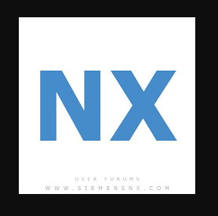
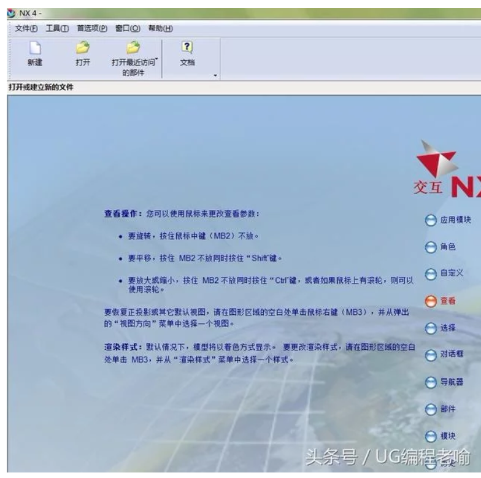

Pro-e <<
Previous Next >> solidworks
Nx

1960年
由McDonnell Douglas Automation 公司成立。
1976年，
收購了Unigraphics CAD/CAE/CAM系統的開發商——United Computing公司，UG的雛形問世。
1983年
UG正式 上市。
1986年
Unigraphics吸取了業界領先的、為實踐所證實的實體建模核心——Parasolid的部份功能。
1989年
Unigraphics宣布支持UNIX平台及開放系統的結構，並將一個新的與STEP標準兼容的三維實體建模核心Parasolid引入UG。
1990年
Unigraphics作為McDonnell Douglas（波音飛機公司）的機械CAD/CAE/CAM的標準。
1991年
Unigraphics開始了從CAD/CAE/CAM大型機版本到工作站版本的轉移。
1993年

Unigraphics引入複合建模的概念，可以實體建模、曲線建模、框線建模、半參數化及參數化建模融為一體。
1995年
Unigraphics首次發布了Windows NT版本。
1996年
Unigraphics發布了能自動進行干涉檢查的高級裝配功能模塊、最先進的CAM模塊以及具有A類曲線造型能力的工業造型模塊：它在全球迅猛發展，占領了巨大的市場份額，已經成為高端及商業CAD/CAE/CAM應用開發的常用軟體。
1997年
Unigraphics新增了包括WAVE（幾何連結器）在內的一系列工業領先的新增功能。WAVE這一功能可以定義、控制、評估產品模板，被認為是在未來幾年中業界最有影響的新技術。
2000年
Unigraphics發布了新版本的UG17，最新版本的，是UGS成為工業界第一個可以裝載包含深層嵌入「基於工程知識」（KBE）語言的世界級MCAD軟體產品的供應商。
2001年
Unigraphics發布了新版本UG18，新版本對舊版本的對話框進行了調整，使得在最少的對話框中能完成更多的工作，從而簡化了設計。
2002年
Unigraphics發布了UG NX1.0.新版本繼承了UG18的優點，改進和增加了許多功能，使其功能更強大，更完美。
2003年
Unigraphics發布了新版本UG NX2.0 。新版本基於最新的行業標準，它是一個全新支持PLM的體系結構。EDS公司同其主要客戶一起，設計了這樣一個先進的體系結構，用於支持完整的產品工程。
2004年
Unigraphics發布了新版本的UG NX3.0，它為用戶的產品設計與加工過程提供了數字化造型和驗證手段，。它針對用戶的虛擬產品的設計和工藝設計的需要，提供經過實踐驗證的解決方案。
2005年
Unigraphics發布了新版本的UG NX4.0.它是嶄新的NX體系結構，使得開發與應用更加簡單和快捷。
2007年
UGS公司發布了NX 5.0 – NX的下一代數字產品開發軟體，幫助用戶以更快的速度開發創新產品，實現更高的成本效益。
2008年
6月，Siemens PLM Software發布UG NX 6.0，建立在新的同步建模技術基礎之上的NX 6將在市場上產生重大影響。同步建模技術的發布標誌著NX的一個重要里程碑，並且向MCAD市場展示Siemens的鄭重承諾。 NX 6將為我們的重要客戶提供極大的生產力提高。
2009年
10月 – 西門子工業自動化業務部旗下機構、全球領先的產品生命周期管理（PLM）軟體與服務提供商Siemens PLM Software 宣布推出其旗艦數字化產品開發解決方案NX 軟體的最新版。UG NX 7.0引入了「HD3D」（三維精確描述）功能，即一個開放、直觀的可視化環境，有助於全球產品開發團隊充分發掘PLM信息的價值，並顯著提升其制定卓有成效的產品決策的能力。此外，NX 7.0還新增了同步建模技術的增強功能。修復了很多6.0所存在的漏洞，穩定性方面較6.0有很大的提升。
2010年
5月20日– Siemens PLM Software在上海世博會發布了功能增強的NX7最新版本（UG NX 7.5），NX GC 工具箱將作為NX 7最新版本的一個應用模塊與NX 7一起同步發布。NX GC 工具箱是為滿足中國用戶對NX特殊需求推出的本地化軟體工具包。在符合國家標準（GB）基礎上，NX GC 工具箱做了進一步完善和大量的增強工作。
2011年
9月 - Siemens PLM Software發布了UG NX 8.0
2012年
10月 - Siemens PLM Software發布了UG NX 8.5
2013年
10月- Siemens PLM Software發布了UG NX 9.0
2014年
8月- Siemens PLM Software發布了UG NX 10.0
2016年
8月- Siemens PLM Software發布了UG NX 11.0
2017年
10月- Siemens PLM Software發布了UG NX 12.0
Pro-e <<
Previous Next >> solidworks